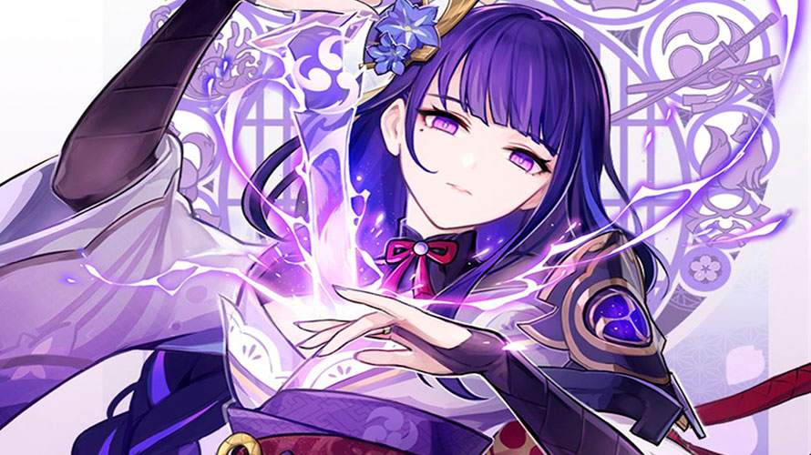

Arconte Electro:

Shogun Raiden
La arconte electro es una "DPS" o "supor" muy buena con un daño por rotacion estable es una de los mejores dps electro que hay.
Mejor equipo:
- Bennett (Apoyo)
- Xingqiu (Apoyo)
- Xiangling (DPS)

Clic en la imagen.

Clic en la imagen.